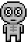
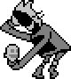
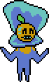
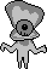

DELTARUNE Page
This page is specific to UNDERTALE. If you are looking for information reguarding gaster in DELTARUNE then click here.
This page is specific to UNDERTALE. If you are looking for information reguarding gaster in DELTARUNE then click here.
So curious reader, you may be wondering "who is gaster and why is he real???", so I believe it is important to start from the beginning.
In 2015 a game called Undertale was relased to the world with critical acclaim, blah blah blah. Look, I'm going to assume most of you reading this know that Undertale is. I believe the game needs no introduction. We're all here for Gaster afterall. So let's start with...
In the game, W. D. Gaster was the royal scientist before Alphys. One day he "fell into his own creation" and he shattered across time and space. And that's his backstory. Yes, that's it. That is literally all the canon lore we have on this guy. So why is the fandom so obsessed with this character that doesn't even have a canon sprite nor a single line of dialouge (well technically he does but we'll get more into that later). To answer that question, those reasons are exactly why the fanbase is so obsessed with him. If there's one thing the internet loves, it is a good mystery, and our boy W.D. Gaster is the embodiment of a mystery. Now without further adieu, let's dive straight into this mystery, TO THE MYSTERY VAN!
In Undertale, there is something called a FUN value. A FUN value is a random number between 1 and 100 that is selected when you start a new game. Depending on the number you get, you may encounter some rare events during the game. More specifically, if you get a number between 61 and 63, you have a chance to run into NPCs who are called "gaster followers". There are three gaster followers and each of them reveal a fact about Gaster.
First we have gaster follower #1. If your FUN value is 62, this little guy has a 50% chance to appear in a certain room in Hotland. When you interact with them, they say:
Mmm yes, nice and juicy lore. So it seems our guy Gaster here is a pretty smart guy. Not only was he the royal scientist, he created the CORE, which is what provides power to all of the underground. But don't worry, that's not all there is to this story.
Next up, we have gaster follower #2. This guy has a 20% chance to appear in Hotland if the FUN value is 61. When you talk to them, they say:
They then immediatly disappear once you get done talking to them. Now we're gonna ignore the part about them holding a piece Gaster and focus on the important part here. Gaster one day disappeared and was shattered across time and space. Now there is one more follower we need to discuss:

Lastly, we have gaster follower #3! This one has a 50% chance to appear in hotland if the Fun value is 63. When spoken to they say:
When you talk to them again they say:
Now, there is quite a lot to unpack here. Connecting all of the dots here, Dr. W.D. Gaster was the former royal scientist who created the CORE. However, one day something went wrong with one of his experiments and he fell into his own creation and was shattered across time and space. Also he is apparently listening to us and follower #2 has a piece of him? Ignoring how weird that is, it seems Gaster has met a terrible fate. Now moving on to exhibit B:
Goner Kid appears in waterfall if your FUN value is 90 or above. When you speak to them they say:
Talk to them with an unbrella they say:
There's no real evidence that this character is related to Gaster, except for the fact that they're grayscale just like the gaster followers. They don't even mention Gaster at all. But I figured I would talk about them anyway. It's hard to tell what is actually up with this kid. It seems something has happened to them that has made them forgotten.
 Clam Girl is a weird case. She only appears in watefall if your FUN value is between 80 and 89. She talks a lot about ther neighbor's daughter named Suzy. As of version 1.001 of the game, talking to Clam Girl during the pacifist epilouge will chage the dialouge in Sans's workshop (more about that later).
Even more interesting is that in the Nintendo Switch version of the game, when the Fun value is 81 and you speak with Clam Girl in the epilouge, she says:
She immediatly disappears, using the same sound effect that Gaster Follower #2 does. It's important to note that a character in Deltarune (game released just a month after the switch version released) is named Susie. So was this just a convoluted marketing attempt by Toby to promote his new game? Or is it MORE GASTER LOOOOOOOOORRRRREEEE????? The world my never know. Honestly neither of the goner characters seem to have much connection to Gaster (on the surface at least) but many fans think they do so that's why I've decided to talk about them. Now on to something everyone will love...
Ah yes, it's time to talk about the internet's favorite skeleton. Everyone loves this guy. Some people love him a little TOO much, but that's besides the point. There seems to be lots of evidence Sans is connected to our favorite mystery boi.
Exibit A: Sans's weapon in the genocide route. Seems normal on the surface right? In the game files, this cute little thing (ok it's not really cute) is named "gaster blaster". Now dear viewer, I know what you're thinking "but Jaylen, game file names don't prove anything". And you know what, you may have a point, however, I've come prepared.

Exhibit B: Sans's workshop. When you walk in, there are four drawers and a strange machine covered up with a curtain. One drawer contains a badge, and another contains a photo album with people that the protagonist doesn't recognize. If the protagonist has encountered Clam Girl earlier in the route, interacting with the drawer causes a card to slip into the protagonist's view; it displays a poorly drawn picture of 3 people, with the words "don't forget" written on it. The other two drawers causes the protagonist to read the blueprint on the countertop, which is said to be written in unintelligible symbols or handwriting (weird symbols? hmmmmm more on this later). It is important to note that Toby Fox himeself has stated the machine to be unfixable. This may or may not be relevant to Gaster but I feel it's important to mention anyway.
Now that we've established Sans's possible connection to Gaster, now it's time to talk about...
Room 264 (named room_gaster in the game files) is black and displays shaking, white text in a pixelated Wingdings font. The translated text says:
Yes very interesting indeed, MR GASTER! Yep that's right, entry 17 was written by Gaster himself... or so it seems. Again nothing is offically confirmed so I can't 100% say this IS Gaster but come on, who else could it be. The thing is written in Wingdings (guess what the "W.D." in W.D. Gaster stands for) and seems to be referring to some sort of experiment. This is at least 99% Gaster. Also he seems to be talking to two people here. There's not a whole lot of evidence as to who these two people could be. Some popular fan theories speculate that he could be talking to Sans and Papyrus. Again this is nothing but a fan theory so take it with a grain of salt. Speaking of fan theories we'll be getting to that soon. First we have one last thing to cover.
In your FUN value is 66, a corridor can appear in water fall with a grey door in the middle.
When you enter, a weird character sprite(named spr_mysteryman in the game files) can be found. Interacting with them causes them to be surprised and disappear using the same sound effect that the Gaster Followers and Goner Clam Girl uses. Many people believe this may be Gaster himself in the flesh, well whatever is left of him. Mr Mystery Man here seems to be in pretty rough shape here. Their face seems very distorted and cracked, almost as if they've been shattered across space and time or something.
With all the canon information out the way, we can finally get into the popular fan theories. Fan theories and range from completely reasonable assessments based on the evidence we have to just downright hunhinged insanity. But worry not, I'll filter out all the schizophrenic ramblings and show you only the best fan theories that me and the community believe to be the most plausable.
Many fans theorize that Gaster is a skeleton for two different reasons. One being that the mystery man's sprite seems to resemble a skeleton. One with cracks above his right eye and below his left eye. Those would be fitting injuries of someone who maybe.. fell into something...? Or perhaps was SHATTERED ACROSS TIME AND SPACE!!!
Sorry I got a little too ahead of myself. Anyway, the next piece of evidence has to do with the way he speaks. The only other two skeletons in UNDERTALE, Sans and Papyrus, both are named after fonts and use those fonts on their dialogue. Gaster's fully name is (presumably) Wing Ding Gaster, LIKE THE FONT USED IN ENTRY 17!!!! So that confirms it right? Gaster is a skeleton, it's basically canon. Well not quite.
See this entire theory hinges on one thing being true, the mystery man being Gaster's true appearence. At the time of writing this, there is nothing to prove this as fact. If this is ever proven to NOT be true, it'll put a masive dent in this theory. Otherwise, I'd say this a solid theory to make based on the evidence that we do have. If I were to rate it on the scale of 1(the seek mental help score) to 10(the basically canon score) it'd give it a strong 8. Now this segways into the next theory...
This theory actually ties in a lot with the previous one, because if gaster is a skeleton, it only makes sense for him to be related to the only other two skeletons in the game. There are two variations of this theory; First being that Gaster is Sans and Papyrus's father. Second, that when Gaster was shattered across time and space, Sans and Papyrus are his only two remaining halves.
I'm going to address the second theory first because to be completely honest, I don't think there's much evidence to back this up. The only real evidence for this is in Snowdin, an NPC says that Sans and Papyrus "just showed up one day and asserted themselves", which can mean a number of things, not just the skeleton brothers spawning in because Gaster got shattered. Sorry to say but I'm gonna have to rate this theory a light 3 due to the very flimsy evidence.